Intelligent Finance & Expense Tracking with Receipt Recognition
"Track Smarter. Live Better."
System Documentation
Developed by:
James Ryan Amba – Lead Developer
Graco Aloba – Co-Developer & QA
Ellijan Esquivel – Co-Developer & QA
Jed Ortega – Co-Developer & QA
[Course Name] | [Section]
Submitted to: [Instructor Name]
[School Name]
[Date of Submission]
Project Title: ExpenSense – Intelligent Finance & Expense Tracking with Receipt Recognition
| Name | Role |
|---|---|
| James Ryan Amba | Lead Developer |
| Graco Aloba | Co-Developer & QA |
| Ellijan Esquivel | Co-Developer & QA |
| Jed Ortega | Co-Developer & QA |
Many students and young earners have a hard time answering one simple question: "Where does my money go?" Everyday expenses like food, transportation, school needs, and small daily purchases look small one at a time, but they add up quickly. Receipts are easily lost, and writing down every expense by hand is tedious, so most people stop tracking after a few days.
ExpenSense is a mobile application for Android and iOS that helps users record, organize, and understand their expenses. Instead of typing every detail, the user can simply take a photo of a receipt. The app reads the receipt, pulls out the important details (merchant, date, items, and total), and lets the user review and correct them before saving. Saved expenses are then reflected in the user's transactions, wallets, budgets, and analytics.
The app was built using React Native with Expo and TypeScript. User accounts, data, and receipt images are stored using Supabase (authentication, PostgreSQL database, and private file storage). Receipt recognition (OCR) is handled by a Supabase Edge Function called process-receipt, and the results are checked and parsed inside the app.
General Objective: To develop a mobile application that makes everyday expense tracking faster, simpler, and more understandable for students and everyday spenders.
Specific Objectives:
| Feature | Description |
|---|---|
| Account & Onboarding | Three-page introduction, account creation with email verification, sign in, forgot password, and password reset. |
| Home Dashboard | Personal greeting, mascot tip, total spending for the selected period (week/month/year), budget progress, income, remaining budget, and pinned category tiles. |
| Receipt Scanner | Capture a receipt with the camera (with flashlight) or upload an image from the gallery. The image is optimized and sent for recognition. |
| Receipt Processing & Review | Shows the recognition steps, then a review screen with the detected merchant, date, items, totals, and a confidence label. The user can edit any field, choose the transaction type (expense, cash-in, or transfer), category, and wallet before confirming. |
| Manual Expense Entry | Enter amount, merchant, category, wallet, date and time, notes, and an optional photo. |
| Transactions | Unified history of expenses, income, cash-in, and transfers with search, filters, sorting, a spending calendar, details, editing, and deleting. |
| Wallets, Budgets & Goals | Multiple wallets, total balance (with option to hide it), adding income, transfers between wallets, monthly category budgets, and savings goals. |
| Analytics & Insights | Monthly income vs. expense, category breakdown (donut chart), spending trends, and insight cards such as top category, recurring merchants, unusual spending, and budget suggestions. |
| Categories | Default and custom categories with icons and colors; categories can be pinned to the dashboard or hidden. |
| Budget Assistant | A simple built-in assistant on the Home screen that answers a set of common spending questions using the selected month's data. It works offline. |
| Profile & Settings | Account information, change password, notification preferences, light/dark/system theme, privacy information, help/FAQ, and about page. |
| Offline Support | Manual expenses created, edited, or deleted while offline are saved on the device and synced once the connection returns. |
| Requirement | Specification |
|---|---|
| Device | Android or iOS smartphone |
| Operating System | Android 7.0 or later / iOS 16.4 or later |
| Camera | Rear camera (for scanning receipts) |
| Internet Connection | Required for sign in, receipt recognition, and syncing data |
| Permissions | Camera access (scanning) and photo library access (uploading receipts) |
| Account | A registered ExpenSense account with a valid email address |
| Requirement | Specification |
|---|---|
| Computer | Windows, macOS, or Linux |
| Runtime | Node.js 22.13 or later and npm |
| Framework | Expo SDK 57, React Native 0.86, React 19.2 |
| Language | TypeScript |
| Backend | Supabase project (Auth, PostgreSQL, Storage, Edge Functions) |
| Tools | Code editor (VS Code / Kiro), Git, Expo CLI, EAS (for builds and updates) |
Note: The screenshots below show the ExpenSense interface design. Some labels may differ slightly from the latest build (for example, the fifth tab is now labeled Wallet instead of Budget).
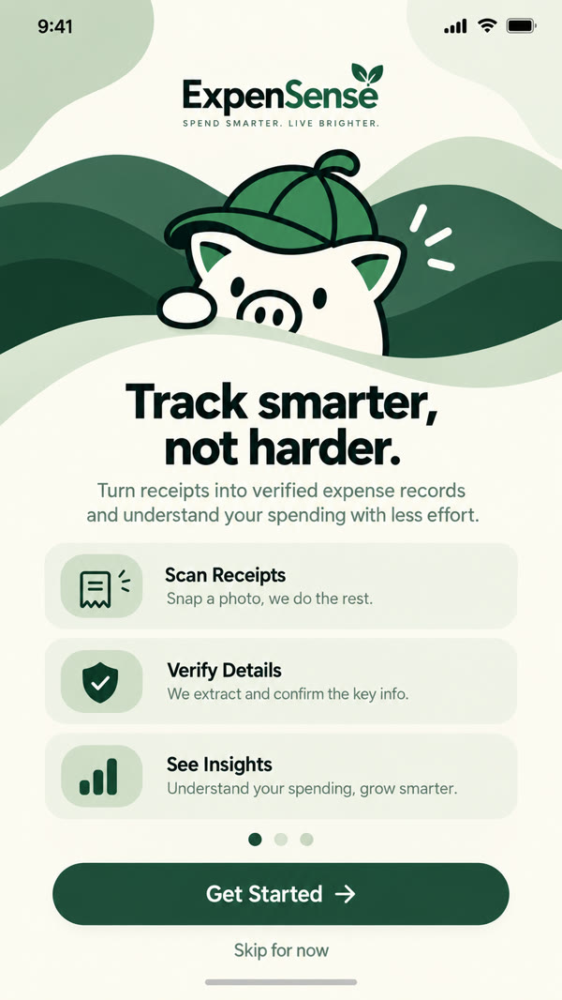 Figure 1. Onboarding Screen |
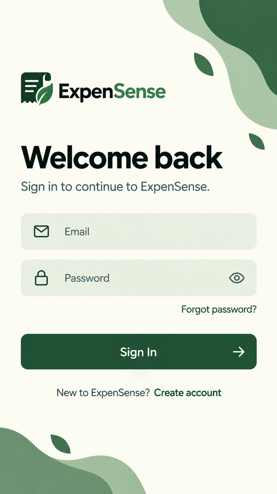 Figure 2. Sign In Screen |
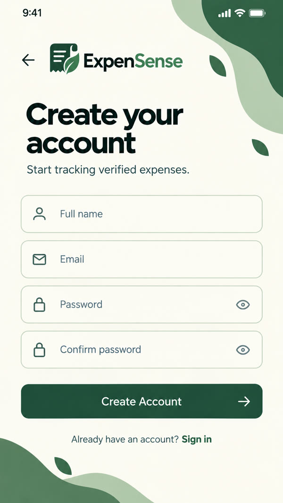 Figure 3. Create Account Screen |
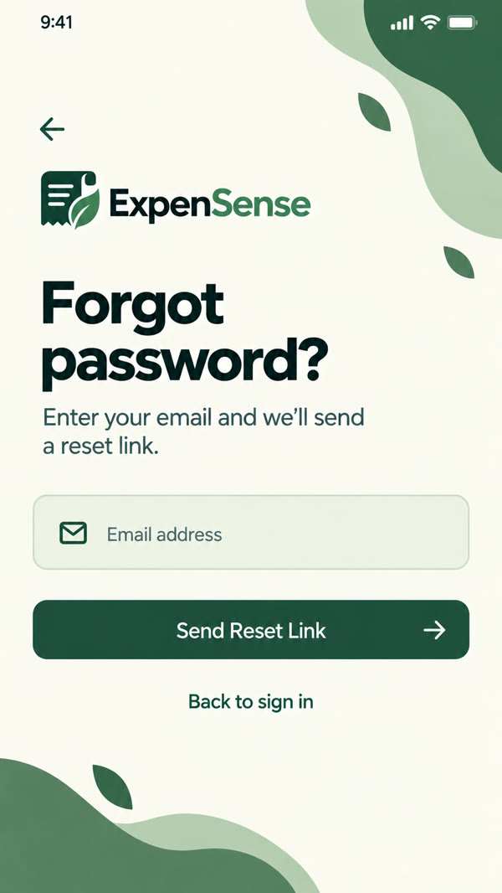 Figure 4. Forgot Password Screen |
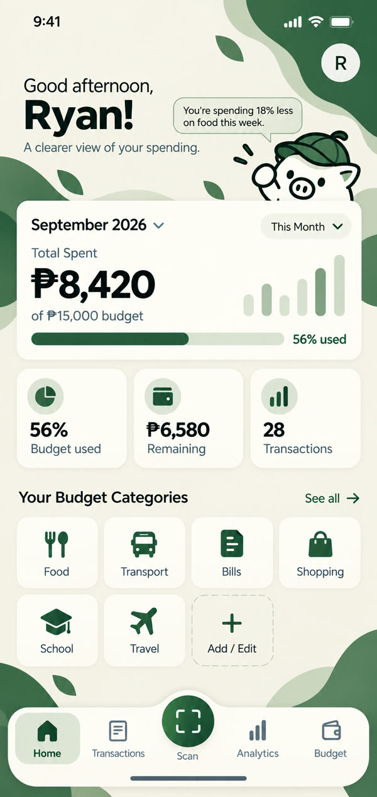 Figure 5. Home Dashboard |
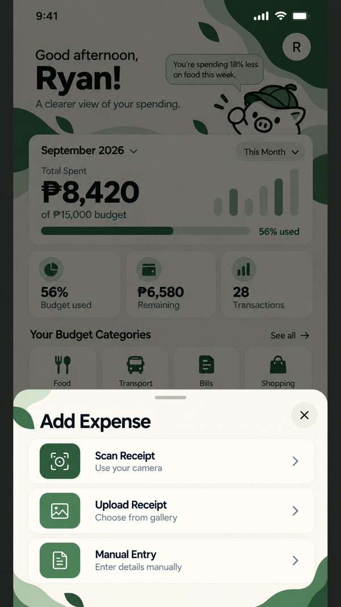 Figure 6. Add Expense Options (Scan, Upload, Manual) |
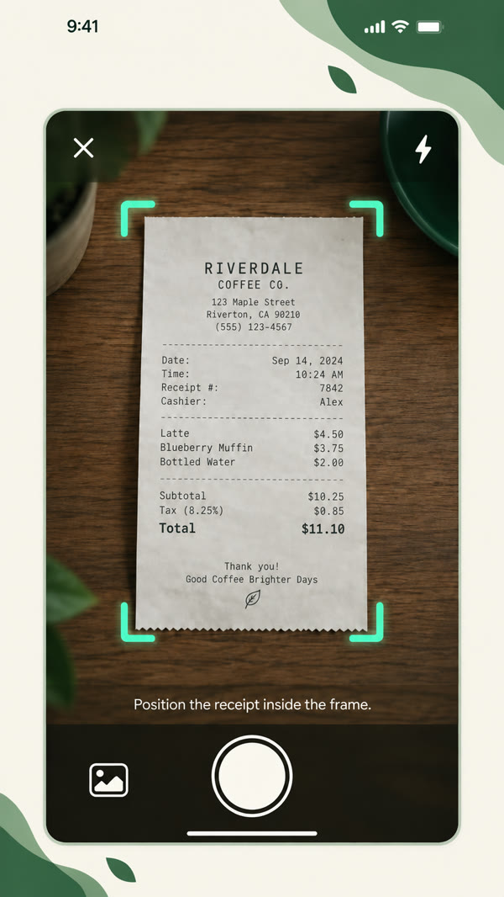 Figure 7. Step 1 – Capture the Receipt |
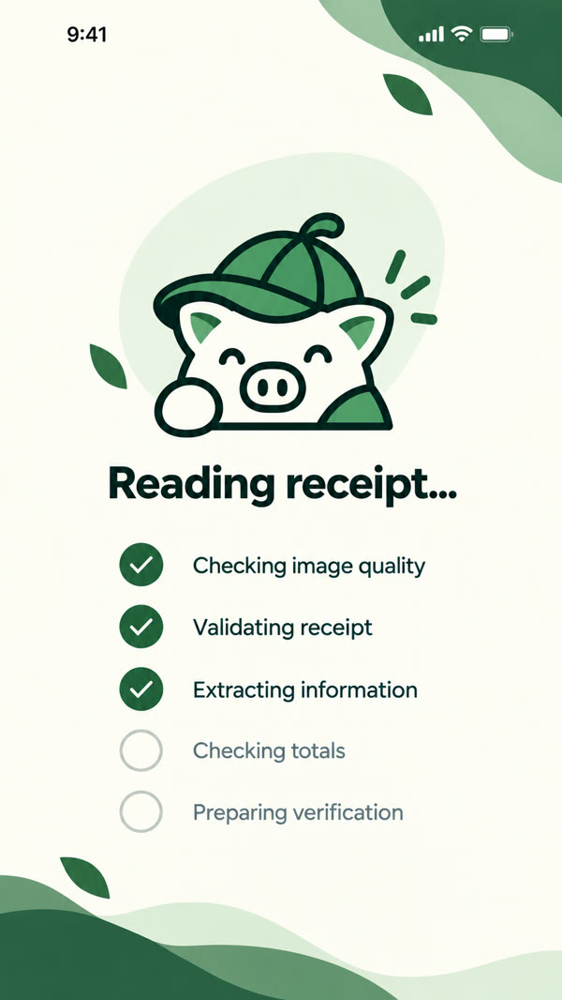 Figure 8. Step 2 – Processing the Receipt |
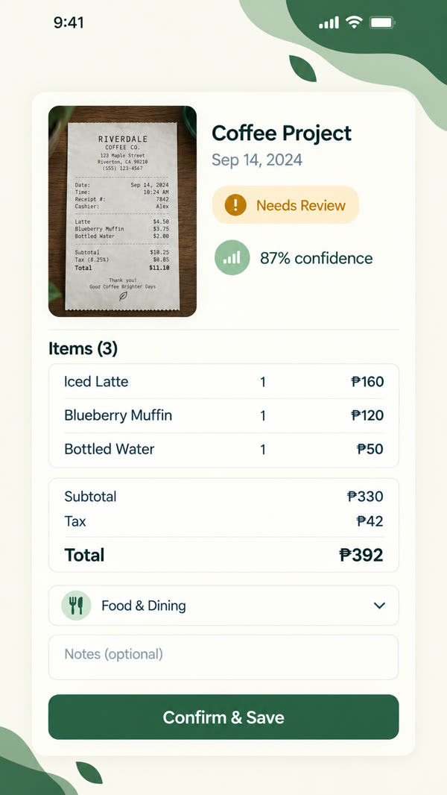 Figure 9. Step 3 – Review and Confirm |
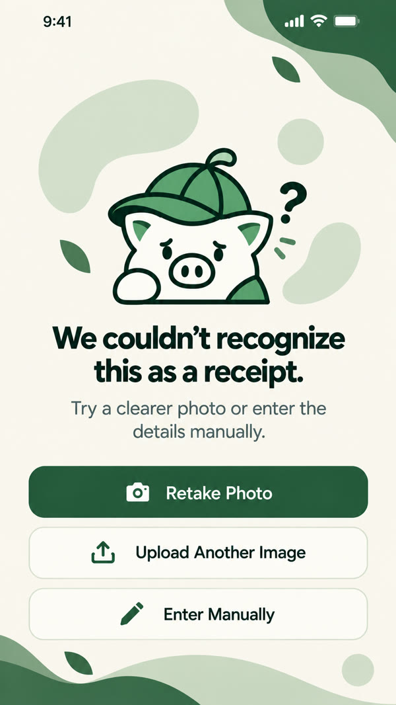 Figure 10. Recognition Failed (Recovery Options) |
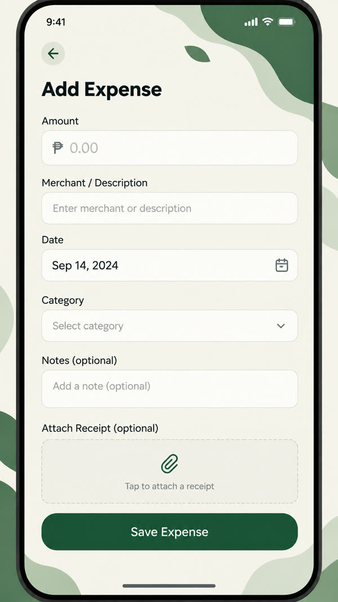 Figure 11. Manual Expense Entry |
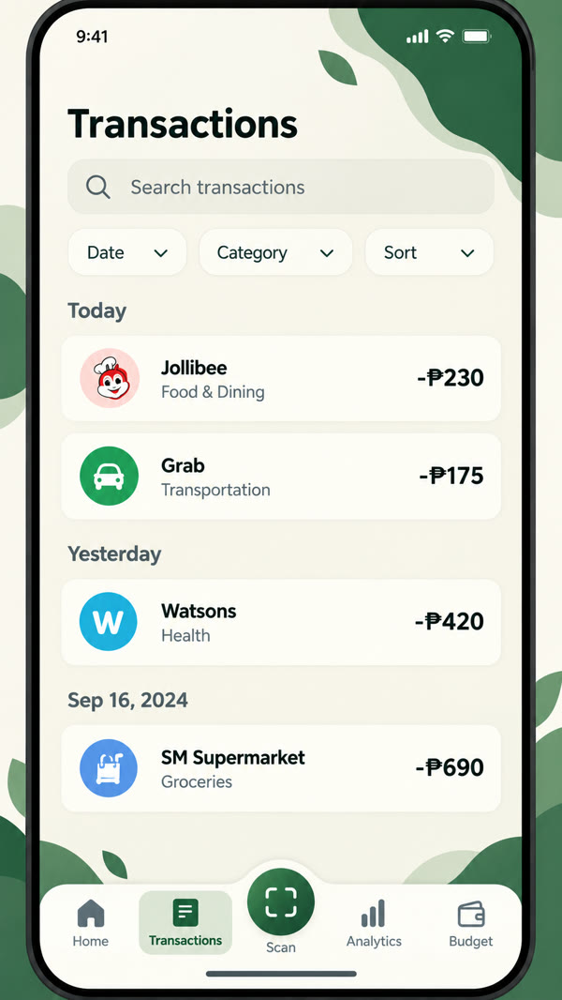 Figure 12. Transactions List |
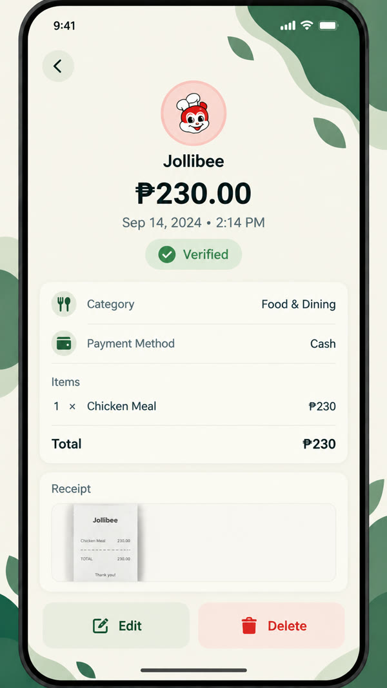 Figure 13. Transaction Details |
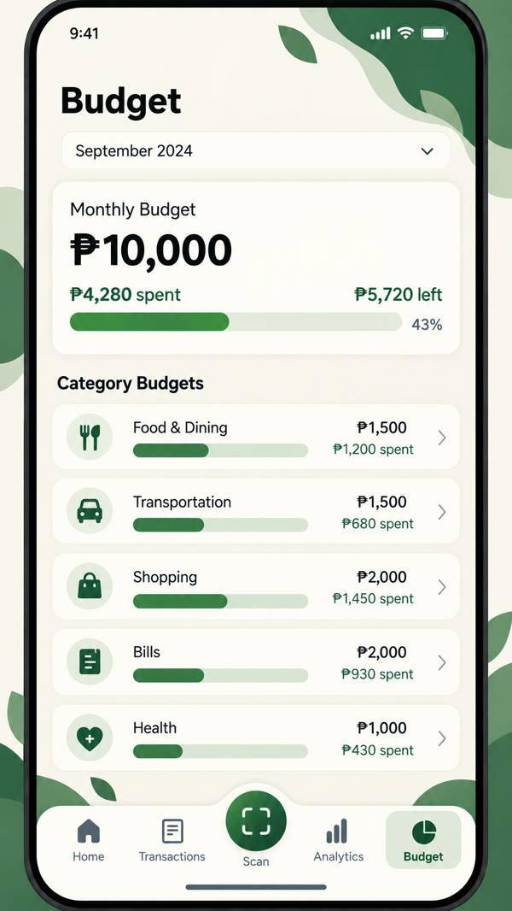 Figure 14. Wallet & Budget Overview |
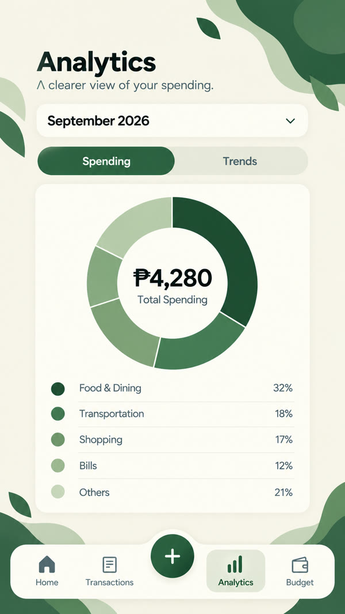 Figure 15. Analytics Overview |
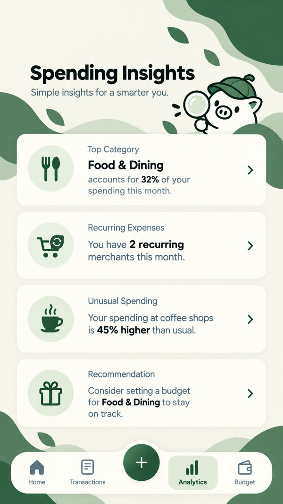 Figure 16. Spending Insights |
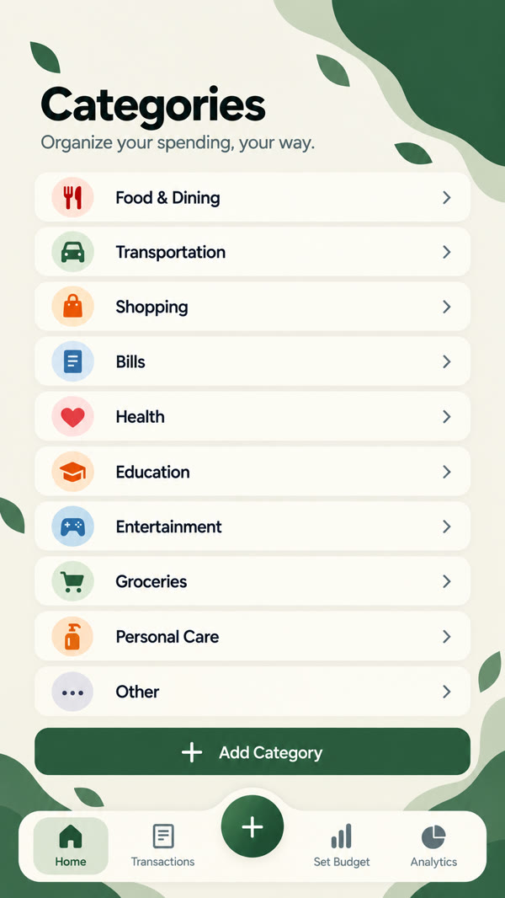 Figure 17. Categories |
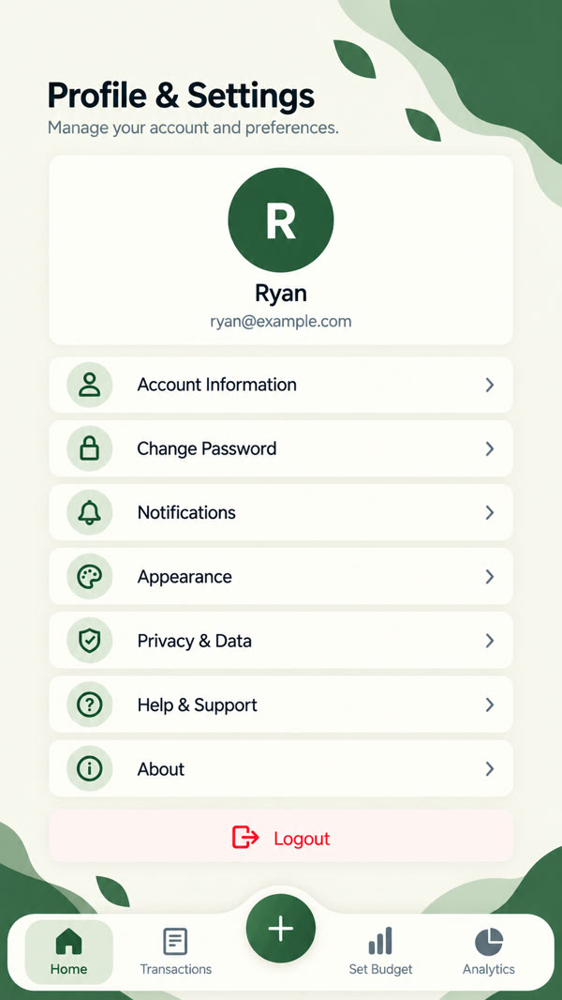 Figure 18. Profile & Settings |
| Member | Role | Contributions |
|---|---|---|
| James Ryan Amba | Lead Developer | Planned the overall system and app structure; developed the main screens and navigation; set up the Supabase database, authentication, and storage; integrated the receipt recognition (OCR) flow; handled builds and deployment; led the team and reviewed all features. |
| Graco Aloba | Co-Developer & QA | Helped develop app screens and features; tested the receipt scanning and manual entry flows; reported and helped fix bugs; assisted in preparing the documentation and presentation. |
| Ellijan Esquivel | Co-Developer & QA | Helped develop app screens and features; tested transactions, wallets, budgets, and analytics; checked the app on different devices; assisted in preparing the documentation and presentation. |
| Jed Ortega | Co-Developer & QA | Helped develop app screens and features; tested account sign-up, sign-in, password reset, and settings; wrote test cases and checked user flows; assisted in preparing the documentation and presentation. |
ExpenSense – Track Smarter. Live Better.